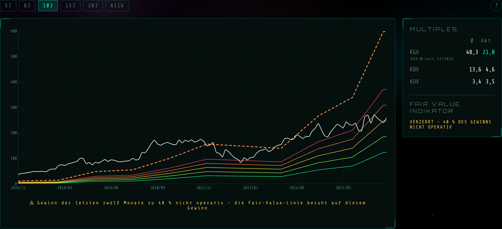
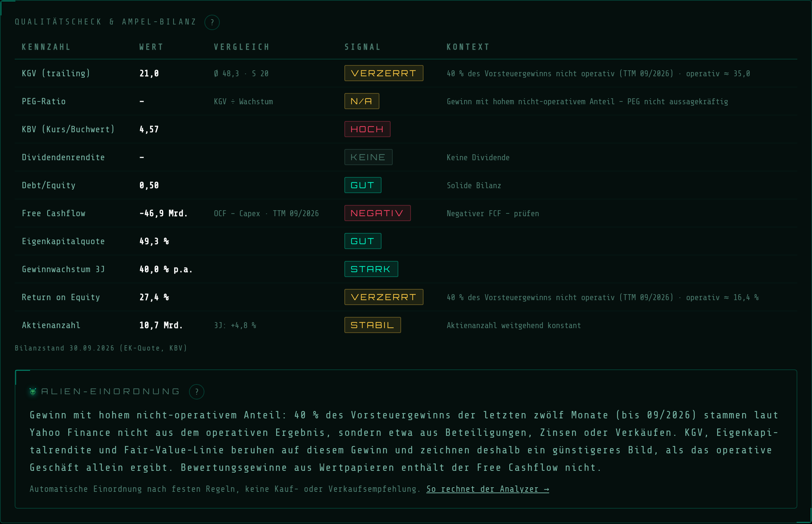
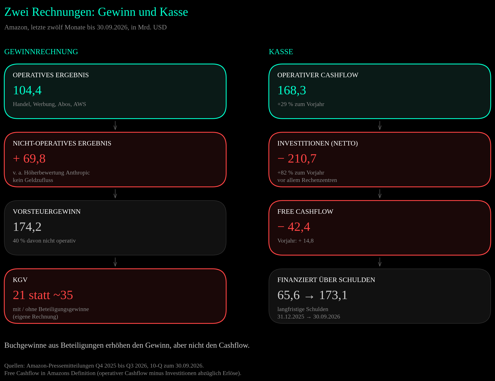
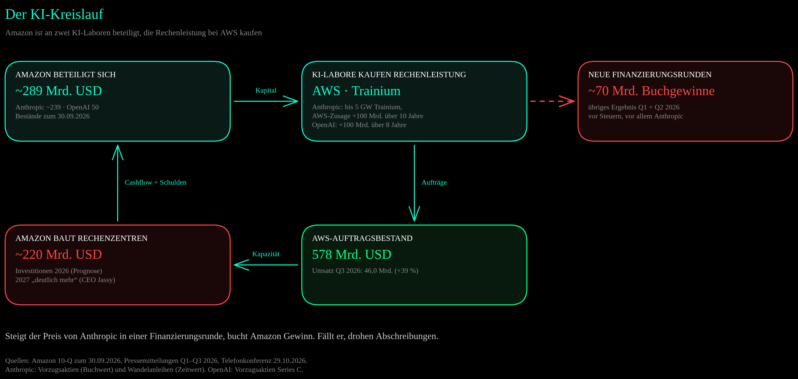
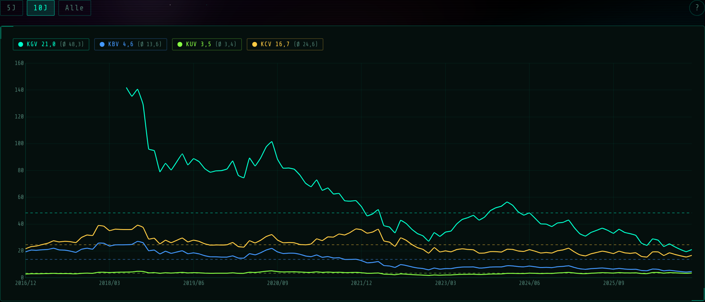

Vor einem Jahr kostete die Amazon-Aktie knapp das 33-Fache ihres Gewinns. Heute steht der Kurs 11 % höher, und das KGV liegt bei 21. Auf den ersten Blick wirkt Amazon damit plötzlich günstig. Der zweite Blick zeigt, woher der Sprung im Gewinn kommt: Rund 40 % des Vorsteuergewinns der letzten zwölf Monate stammen nicht aus Handel, Werbung oder Cloud, sondern vor allem aus der Höherbewertung der Beteiligung an Anthropic. Gleichzeitig baut Amazon Rechenzentren in einem Tempo, das mehr Geld verbraucht, als das Geschäft einbringt. Der Free Cashflow ist auf −42 Mrd. USD gefallen, die langfristigen Schulden haben sich seit Jahresbeginn mehr als verdoppelt. Diese Analyse ersetzt die Fassung vom November 2025 und trennt, was davon Geschäft ist und was Buchhaltung.
„Ein Gewinn, den man nicht ausgeben kann, ist eine Bewertung. Ein Rechenzentrum, das man bezahlt hat, ist eine Wette.“
1) Kurzüberblick
| Kennzahl | Wert |
|---|---|
| Ticker | AMZN (Nasdaq) |
| Kurs (Schluss 06.11.2026) | 259,30 USD |
| Seit der letzten Analyse | +11,2 % (Schluss 28.11.2025: 233,22 USD) |
| Spanne 2026 (Schlusskurse) | 198,79 USD (13.02.) bis 284,02 USD (03.08., Rekord) |
| Marktkapitalisierung | ~2,80 Bio. USD |
| KGV (trailing, GAAP) | 21,0 (ohne Beteiligungsgewinne rund 35¹) |
| EPS (TTM, GAAP verwässert) | 12,37 USD (ohne Beteiligungsgewinne rund 7,41 USD¹) |
| Umsatz (TTM) | 797,5 Mrd. USD |
| Operatives Ergebnis (TTM) | 104,4 Mrd. USD |
| Free Cashflow (TTM, Amazon-Definition) | −42,4 Mrd. USD (Vorjahr +14,8 Mrd.) |
| Investitionen 2026 (Prognose) | rund 220 Mrd. USD |
| Dividende | keine |
| Sektor | Handel, Cloud (AWS), Werbung |
¹ Eigene Rechnung [SCHÄTZUNG]: Vorsteuergewinn der letzten zwölf Monate 174,2 Mrd. USD minus übriges Ergebnis („Other income“) 69,5 Mrd., davon Steuern mit der Zwölfmonatsquote von 22,3 % abgezogen, dazu das Ergebnis aus At-Equity-Beteiligungen (−0,5 Mrd.): 80,8 Mrd. USD. Geteilt durch 10,89 Mrd. verwässerte Aktien ergibt das 7,41 USD je Aktie, bei 259,30 USD ein KGV von 35,0. Näherung: Das übrige Ergebnis enthält neben Anthropic auch Optionsscheine, Wertpapiere und Währungseffekte.
Amazon betreibt drei Geschäfte unter einem Dach: einen der größten Online-Händler der Welt mit Marktplatz für fremde Händler, eine Werbeplattform auf diesen Seiten und mit AWS den nach Marktanteil größten Cloud-Anbieter. Dazu kommen Prime als Abo, Logistik, Geräte und mit Amazon Leo ein eigenes Satelliten-Internet. Zum 30.09.2026 beschäftigte Amazon 1.638.000 Menschen.
Was seit der letzten Analyse passiert ist
| Datum | Ereignis | Kurs AMZN |
|---|---|---|
| 05.02.2026 | Zahlen 2025, Investitionsplan „about $200 billion“ für 2026 | 06.02.: −5,6 % auf 210,32 USD |
| 13.02.2026 | Tiefster Schlusskurs des Jahres | 198,79 USD |
| April 2026 | Bester Börsenmonat seit 2007 (Bloomberg-Daten) | +27,3 % |
| 29.04.2026 | Q1: 16,8 Mrd. USD Vorsteuergewinn aus Anthropic | — |
| 30.07.2026 | Q2: 53,4 Mrd. USD übriges Ergebnis, vor allem Anthropic | 31.07.: +15,3 % auf 271,58 USD |
| 03.08.2026 | Rekord-Schlusskurs | 284,02 USD |
| 31.08.2026 | FTC und 22 Bundesstaaten klagen wegen der Werbeauktionen | — |
| 26.10.2026 | Anthropic reicht den Börsenprospekt (S-1) öffentlich ein | — |
| 29.10.2026 | Q3: höchste operative Marge der Firmengeschichte, AWS +39 % | 30.10.: −1,4 % auf 240,35 USD |
| 06.11.2026 | Schlusskurs | 259,30 USD |
Drei Entwicklungen prägen das Jahr:
- AWS beschleunigt: Im dritten Quartal 2025 wuchs die Cloud um 20 %, ein Jahr später um 39 %. Der Auftragsbestand liegt bei 578 Mrd. USD.
- Investitionen auf neuem Niveau: In den letzten zwölf Monaten flossen netto 210,7 Mrd. USD in Rechenzentren, Chips, Logistik und Satelliten, 82 % mehr als ein Jahr zuvor. Für 2026 rechnet Amazon mit rund 220 Mrd., für 2027 mit „deutlich mehr“.
- Gewinne aus Beteiligungen: Im ersten Halbjahr buchte Amazon rund 70 Mrd. USD Vorsteuergewinn, vor allem aus Anthropic. Geld floss dabei nicht. Diese Gewinne drücken das KGV auf 21.
2) Geschäftsmodell & Segmente
Amazon berichtet in drei Segmenten. Der Umsatz kommt überwiegend aus dem Handel, der Gewinn überwiegend aus der Cloud.
| Segment | Umsatz Q3 2026 | Wachstum | Op. Ergebnis | Op. Marge |
|---|---|---|---|---|
| North America (Handel USA, Kanada) | 112,9 Mrd. USD | +6 % | 8,7 Mrd. USD | 7,7 % |
| International (Handel übrige Länder) | 43,1 Mrd. USD | +5 % (+8 % ohne Währungseffekte) | 1,6 Mrd. USD | 3,7 % |
| AWS (Cloud) | 46,0 Mrd. USD | +39 % | 17,8 Mrd. USD | 38,7 % |
| Gesamt | 201,9 Mrd. USD | +12 % | 28,1 Mrd. USD | 13,9 % |
Quelle: Amazon-Pressemitteilung zum dritten Quartal 2026 (29.10.2026). Margen eigene Rechnung.
AWS bringt 23 % des Umsatzes, aber 63 % des operativen Ergebnisses [eigene Rechnung]. Im Handel steckt ein zweites Geschäft, das Amazon nicht als Segment ausweist und dessen Marge es nicht nennt: die Werbung. Händler bezahlen dafür, dass ihre Produkte in der Suche weiter oben stehen. Nach Umsatzarten sah das dritte Quartal so aus:
| Umsatzart | Q3 2026 | Wachstum |
|---|---|---|
| Online-Shops (eigener Verkauf) | 68,5 Mrd. USD | +2 % |
| Dienstleistungen für Drittanbieter (Gebühren, Versand) | 46,5 Mrd. USD | +9 % |
| AWS | 46,0 Mrd. USD | +39 % |
| Werbung | 19,6 Mrd. USD | +11 % (+12 % ohne Währungseffekte) |
| Abos (Prime u. a.) | 14,0 Mrd. USD | +11 % |
| Läden und Sonstiges (Rest) | 7,4 Mrd. USD | — |
Das schwache Wachstum im Handel ist zum Teil ein Kalendereffekt. Prime Day lag 2026 in den meisten großen Ländern im zweiten Quartal, 2025 komplett im dritten. Ohne diese Verschiebung wäre der Konzernumsatz laut Amazon um rund 400 Basispunkte stärker gewachsen. Auch die Werbung nennt Amazon davon betroffen: Ohne Währungseffekte wuchs sie im dritten Quartal um 12 %, nach 26 % im zweiten. Für das vierte Quartal erwartet Amazon wieder ein Wachstum „in the high teens“.
3) Wachstum & Entwicklung
| Jahr | Umsatz | Op. Ergebnis | Op. Marge | Übriges Ergebnis | EPS |
|---|---|---|---|---|---|
| 2021 | 469,8 Mrd. | 24,9 Mrd. | 5,3 % | +14,6 Mrd. | 3,24 USD |
| 2022 | 514,0 Mrd. | 12,2 Mrd. | 2,4 % | −16,8 Mrd. | −0,27 USD |
| 2023 | 574,8 Mrd. | 36,9 Mrd. | 6,4 % | +0,9 Mrd. | 2,90 USD |
| 2024 | 638,0 Mrd. | 68,6 Mrd. | 10,8 % | −2,3 Mrd. | 5,53 USD |
| 2025 | 716,9 Mrd. | 80,0 Mrd. | 11,2 % | +15,2 Mrd. | 7,17 USD |
| TTM bis 09/2026 | 797,5 Mrd. | 104,4 Mrd. | 13,1 % | +69,5 Mrd. | 12,37 USD |
Quellen: Amazon 10-K 2021–2025, Pressemitteilung zum dritten Quartal 2026. Beträge in USD. „Übriges Ergebnis“ ist der Posten „Other income (expense), net“ (vor Steuern). Margen eigene Rechnung.
Der Umsatz wuchs von 2021 bis 2025 um gut 11 % pro Jahr [eigene Rechnung]. Die eigentliche Geschichte ist die Marge: 2022 blieben vom Umsatz 2,4 % als operatives Ergebnis, in den letzten zwölf Monaten 13,1 %. Das liegt vor allem an AWS, dessen Marge mit 38,7 % im dritten Quartal ein Vielfaches der Handelssegmente beträgt, und am Wachstum von Werbung und Händlergebühren, deren Margen Amazon nicht einzeln ausweist.
Der Gewinn je Aktie folgt diesem Trend nur grob, weil das übrige Ergebnis ihn seit Jahren in beide Richtungen verbiegt. 2021 brachte die Beteiligung am Elektroautobauer Rivian einen Bewertungsgewinn von 11,8 Mrd. USD, 2022 einen Verlust von 12,7 Mrd. Den Verlust 2022 verursachte die Rivian-Aktie, operativ blieb Amazon mit 12,2 Mrd. USD im Plus. 2026 ist es Anthropic, und der Effekt ist um ein Vielfaches größer: In den letzten zwölf Monaten kamen 69,5 Mrd. USD aus dem übrigen Ergebnis, mehr als das gesamte operative Ergebnis des Jahres 2024 (68,6 Mrd.).
Das dritte Quartal im Detail: Das operative Ergebnis stieg auf 28,1 Mrd. USD nach 17,4 Mrd. Der Vergleich ist verzerrt. Im Vorjahresquartal standen 2,5 Mrd. für den FTC-Vergleich im Prime-Verfahren und rund 1,8 Mrd. für Abfindungen, ohne beides wären es 21,7 Mrd. gewesen. Der Nettogewinn fiel dagegen leicht auf 20,7 Mrd. USD (Vorjahr 21,2 Mrd.), weil damals 9,5 Mrd. Vorsteuergewinn aus Anthropic darin steckten, diesmal ein übriges Ergebnis von −0,7 Mrd. Amazon nennt die operative Marge von 13,9 % die höchste seiner Geschichte.

Alien Analyzer V2, Fairer-Wert-Tab (07.11.2026): Die Fair-Value-Linie (orange gestrichelt) schießt am Ende auf fast 600 USD, weil sie den Gewinn je Aktie von 12,37 USD mit dem KGV-Median von 48,3 multipliziert. Genau davor warnt das Tool: Der Indikator zeigt keine Zahl, sondern „VERZERRT – 40 % des Gewinns nicht operativ“. ↗ Zum Vergrößern klicken
4) Profitabilität & Bilanz

Alien Analyzer V2, Qualitätscheck (07.11.2026, Bilanzstand 30.09.2026). KGV und Eigenkapitalrendite stehen auf „VERZERRT“, das PEG auf „N/A“. Die Alien-Einordnung erklärt den Grund: 40 % des Vorsteuergewinns stammen nicht aus dem operativen Ergebnis. ↗ Zum Vergrößern klicken
² Ohne übriges Ergebnis, bezogen auf das durchschnittliche Eigenkapital zum 30.09.2025 und 30.09.2026 [SCHÄTZUNG, eigene Rechnung]. Der Analyzer nähert denselben Wert mit 16,4 %.
Zur Datenbasis: KGV, KBV, Eigenkapitalquote und Eigenkapitalrendite im Screenshot passen zum Quartalsbericht zum 30.09.2026. Vier Werte brauchen eine Erklärung. Der Free Cashflow von −46,9 Mrd. USD im Tool ist operativer Cashflow minus Brutto-Investitionen. Amazon rechnet die Erlöse aus Verkäufen und Zuschüssen von 4,5 Mrd. gegen und kommt auf −42,4 Mrd. Das Debt/Equity von 0,50 ergibt sich nur, wenn man Leasing und Finanzierungsverpflichtungen mitzählt. Mit Anleihen und Krediten allein sind es 0,29 [eigene Rechnung]. Das Gewinnwachstum von 40,0 % pro Jahr ist die Obergrenze, die der Analyzer anzeigt. Gerechnet vom Gewinn je Aktie 2023 (2,90 USD) bis 2025 (7,17 USD) sind es rund 57 % pro Jahr, auch das mit Beteiligungsgewinnen. Die Aktienzahl stieg in drei Jahren um 4,6 % (ausstehende Aktien laut Deckblatt der Quartalsberichte, Oktober 2023 bis Oktober 2026). Das Tool zeigt +4,8 % und noch „STABIL“, weil seine Grenze bei ±5 % liegt. Seit 2023 hat Amazon keine Aktie zurückgekauft, die aktienbasierte Vergütung lag in den letzten zwölf Monaten bei 19,9 Mrd. USD.
Eigenkapitalquote und KBV sehen zudem besser aus, als das Geschäft allein hergibt: Im Eigenkapital von 613,6 Mrd. USD stecken 102,3 Mrd. kumuliertes übriges Ergebnis (AOCI), überwiegend nicht realisierte Gewinne auf die Wandelanleihen von Anthropic. Diese Gewinne laufen nicht durch die Gewinnrechnung, sondern direkt ins Eigenkapital.

Zwei Rechnungen nebeneinander: Links steigt der Gewinn durch Buchgewinne aus Beteiligungen, rechts fließt mehr Geld in Investitionen, als das Geschäft einbringt. Die Lücke schließen neue Schulden. ↗ Zum Vergrößern klicken
Cash: Der operative Cashflow der letzten zwölf Monate stieg um 29 % auf 168,3 Mrd. USD. Die Investitionen stiegen schneller, netto um 82 % auf 210,7 Mrd. Allein im dritten Quartal waren es 75,9 Mrd. Unterm Strich steht ein Free Cashflow von −42,4 Mrd. USD, ein Jahr zuvor waren es +14,8 Mrd. Daneben flossen 2026 rund 60 Mrd. USD in Vorzugsaktien von OpenAI und Anthropic. Amazon hält an rund 220 Mrd. USD Investitionen für 2026 fest. In den ersten neun Monaten waren es 172,2 Mrd., rechnerisch blieben für das vierte Quartal also rund 48 Mrd., gut ein Drittel weniger als im dritten. Erläutert hat Amazon das nicht. Für 2027 kündigt Vorstandschef Andy Jassy „meaningfully more“ an.
Bilanz: Ende 2025 hatte Amazon 123,0 Mrd. USD Zahlungsmittel und Wertpapiere bei 68,4 Mrd. Anleihen und Krediten, also mehr Geld als Schulden. Zum 30.09.2026 stehen 114,2 Mrd. Zahlungsmittel und Wertpapiere rund 180 Mrd. Anleihen und Krediten gegenüber, einschließlich des kurzfristig fälligen Teils. Die Nettoverschuldung liegt damit bei rund 66 Mrd. USD [eigene Rechnung], dazu kommen 114,8 Mrd. Leasingverbindlichkeiten. Allein der langfristige Teil der Schulden stieg seit Jahresbeginn von 65,6 auf 173,1 Mrd. USD. Amazon hat 2026 Anleihen in US-Dollar, Euro, Schweizer Franken, kanadischen Dollar und britischen Pfund begeben und einen Bankkredit über 17,5 Mrd. USD aufgenommen. Bei einem operativen Ergebnis von über 100 Mrd. im Jahr ist das tragbar. Es verändert aber das Profil: Aus einem Konzern mit mehr Geld als Schulden ist in neun Monaten einer geworden, der seinen Ausbau zu einem guten Teil über Anleihen finanziert.
5) Strategische Themen
AWS und die KI-Nachfrage: Die Cloud ist der Grund für die Investitionen. AWS kam im dritten Quartal auf 46,0 Mrd. USD Umsatz, aufs Jahr gerechnet 184 Mrd. Andy Jassy, President und CEO, beziffert den Auftragsbestand im Gespräch mit Analysten am 29.10.2026 auf 578 Mrd. USD, „growing triple digits year-over-year“. In der Pressemitteilung nennt er für 2027 und 2028 ein projiziertes Wachstum von jeweils über 40 %. Die Zusagen für Amazons eigene Chips Graviton und Trainium sind laut Jassy jeweils mehr als 20-mal so hoch wie vor einem Jahr. Ende 2027 will Amazon Trainium auch außerhalb von AWS verkaufen.
Anthropic und OpenAI: Amazon ist an zwei KI-Laboren beteiligt, die zugleich große AWS-Kunden sind. Zum 30.09.2026 hielt Amazon Anthropic-Vorzugsaktien mit 92,5 Mrd. USD Buchwert und Anthropic-Wandelanleihen mit 146,2 Mrd. Zeitwert, dazu Vorzugsaktien von OpenAI für 50 Mrd. (in drei Raten im Jahr 2026). Dazu hat Amazon Anthropic weitere Finanzierung über bis zu 15 Mrd. USD zugesagt. Umgekehrt hat Anthropic sich bis zu 5 Gigawatt Trainium-Kapazität gesichert und seine AWS-Zusage im zweiten Quartal um mehr als 100 Mrd. USD über zehn Jahre erweitert. OpenAI hat seine bestehende AWS-Zusage über 38 Mrd. um 100 Mrd. über acht Jahre erweitert und will rund 2 Gigawatt Trainium-Kapazität nutzen.

Der KI-Kreislauf: Amazon gibt Kapital, die Labore kaufen Rechenleistung, AWS braucht Rechenzentren. Jede neue Finanzierungsrunde von Anthropic zu einem höheren Preis wird bei Amazon zum Buchgewinn. ↗ Zum Vergrößern klicken
Für die Gewinnrechnung heißt das: Steigt der Preis von Anthropic in einer neuen Finanzierungsrunde, bucht Amazon einen Gewinn. Daraus und aus der Wandlung von Anleihen in Aktien stammen die 16,8 Mrd. USD im ersten Quartal und der größte Teil der 53,4 Mrd. im zweiten. Darauf fielen in den ersten neun Monaten 15,2 Mrd. USD Steueraufwand an, den Amazon vor allem diesen Höherbewertungen zuschreibt. Am 26.10.2026 hat Anthropic seinen Börsenprospekt (S-1) öffentlich bei der SEC eingereicht, geplant ist eine Notierung an der Nasdaq. Laut Amazons Quartalsbericht würden Vorzugsaktien und Wandelanleihen dann in stimmrechtslose Stammaktien getauscht, die Anleihen nur bis zu Amazons Beteiligungsgrenze von 12 %, mit Haltefristen. Meine Einschätzung: Ab dann schwankt das übrige Ergebnis von Amazon mit dem Kurs einer anderen Aktie, nach oben wie nach unten. Welchen Anteil Amazon an Anthropic hält, ist nicht veröffentlicht.
Die Investitionen: Jassy im Wortlaut: „We still expect 2026 cash CapEx of approximately $220 billion, the majority for AWS, and expect to spend meaningfully more in 2027 with a clear line of sight to attractive financial returns.“ Die Begründung des Managements ist der Auftragsbestand, den Jassy „well-diversified“ nennt. Wie viel davon auf Anthropic und OpenAI entfällt, weist Amazon nicht aus. Die Frage für Eigentümer ist, ob die Rendite dieser Rechenzentren reicht, auch wenn ein Teil der Nachfrage von zwei Kunden kommt, die Amazon mitfinanziert.
Amazon Leo: Das Satelliten-Internet, bis November 2025 Projekt Kuiper genannt, soll laut Amazon noch 2026 einen ersten Dienst starten. Mit AT&T gibt es einen Vertrag für Geschäfts- und Behördenkunden. Im April 2026 hat Amazon zudem die Übernahme des Satellitenbetreibers Globalstar vereinbart, der Abschluss ist für 2027 geplant.
Personal: In der Konzernverwaltung strich Amazon im Oktober 2025 rund 14.000 und im Januar 2026 rund 16.000 Stellen. Die Gesamtzahl der Beschäftigten stieg trotzdem um 4 %.
Recht und Regulierung: Die Kartellklage der US-Handelsbehörde FTC von 2023 geht am 29.03.2027 vor Richter John H. Chun in Seattle in die Verhandlung, einen Antrag auf Verschiebung hat das Gericht im Oktober abgelehnt. Seit 31.08.2026 klagen die FTC und 22 Bundesstaaten zusätzlich wegen versteckter Aufschläge in Amazons Werbeauktionen. Das Prime-Verfahren ist erledigt: Im September 2025 zahlte Amazon im Vergleich 2,5 Mrd. USD, davon 1,0 Mrd. Zivilstrafe und 1,5 Mrd. Erstattungen an Kunden. In der EU hält die Kommission AWS nach einer vorläufigen Einschätzung vom 25.06.2026 für einen Gatekeeper nach dem Digital Markets Act, endgültig entschieden ist das noch nicht. In Deutschland hat das Bundeskartellamt im Februar 2026 Amazons Preiskontrolle gegenüber Marktplatzhändlern untersagt und zunächst rund 59 Mio. EUR abgeschöpft, nicht bestandskräftig.
Ausblick: Für das vierte Quartal erwartet Amazon 240 bis 247 Mrd. USD Umsatz (+12 bis +16 %) und 28,5 bis 33,5 Mrd. operatives Ergebnis, nach 25,0 Mrd. im Vorjahresquartal, das 2,4 Mrd. Sonderbelastungen enthielt. Analysten erwarten für 2027 einen Gewinn je Aktie von rund 10,9 USD (stockanalysis.com, laut Quelle bereinigt) bzw. 10,7 USD (Yahoo Finance) [SCHÄTZUNG — Analystenprognose]. Für 2026 mischen die Quellen Werte mit und ohne Anthropic-Gewinne, deshalb nenne ich hier keinen.
6) Bewertung im Kontext

Alien Analyzer V2, Multiples-Tab (07.11.2026): Das KGV fiel von rund 140 (2018) auf 21. Die Linie beginnt erst 2018, obwohl der Median ab 12/2016 läuft: Monate mit extrem hohem KGV lässt der Analyzer als Ausreißer weg. KUV und KCV schwanken deutlich weniger. ↗ Zum Vergrößern klicken
* KGV ohne übriges Ergebnis, Rechenweg unter der Tabelle in Abschnitt 1. ** Kurs 259,30 USD geteilt durch den Analystenkonsens für 2027 von 10,90 USD je Aktie (stockanalysis.com, bereinigt) [SCHÄTZUNG, eigene Rechnung].
Der Analyzer verweigert hier zu Recht einen Fair Value. Ein Gewinn, der zu 40 % aus Buchgewinnen besteht, ergibt mal ein historisches KGV keinen fairen Wert, sondern die Linie bei fast 600 USD aus Abschnitt 3. Statt einer Zahl vier Blickwinkel auf denselben Kurs von 259,30 USD [SCHÄTZUNG — eigene Rechnungen, keine Tatsachen]:
- GAAP-KGV 21: weniger als die Hälfte des Medians seit 2016 (48,3) und nahe am Branchen-KGV von 20, mit dem der Analyzer vergleicht. Diese Zahl beschreibt den Buchgewinn, nicht das Geschäft.
- KGV ohne Beteiligungsgewinne rund 35: weiterhin unter dem eigenen Median, aber deutlich über dem Branchen-KGV. Der Median stammt zudem aus Jahren mit viel niedrigerer Marge (2021: 5,3 %, 2023: 6,4 %). Bei heute 13 % fällt das KGV schon dann niedriger aus, wenn der Markt Amazon gemessen am Umsatz genauso bewertet wie früher. Genau das zeigt das KUV.
- Umsatz und Cashflow: Das KUV von 3,5 liegt fast genau auf dem Median von 3,4. Gemessen am Umsatz kostet Amazon so viel wie im Schnitt der letzten zehn Jahre. Das KCV von 16,7 liegt unter dem Median von 24,6, nur bezahlt der operative Cashflow derzeit die Investitionen nicht. Eine Free-Cashflow-Rendite gibt es bei −42,4 Mrd. USD nicht.
- Nach vorn: Auf den Analystenkonsens für 2027 gerechnet liegt das KGV bei rund 24. Der Konsens unterstellt, dass die Investitionen Gewinn bringen.
Das KBV von 4,6 gegenüber einem Median von 13,6 übergehe ich: Amazons Eigenkapital ist seit 2016 vervielfacht und enthält heute 102 Mrd. USD kumuliertes übriges Ergebnis, überwiegend nicht realisierte Gewinne auf Anthropic-Wandelanleihen. Ein Vergleich mit dem Median ergibt hier keinen Sinn.
Meine Einordnung: Amazon ist nicht so billig, wie das KGV von 21 vermuten lässt, und nicht teuer, gemessen an der eigenen Geschichte. Die Bewertung hängt an einer einzigen Frage, nämlich ob die 220 Mrd. USD dieses Jahres und die höheren Beträge 2027 die Rendite bringen, die das Management in Aussicht stellt. Der Auftragsbestand von 578 Mrd. spricht dafür. Die Kunden dahinter und die Finanzierung über Schulden sind die Punkte, die ein Eigentümer im Blick behalten sollte.
Tool-Tipp
Die Kennzahlen in dieser Analyse stammen aus dem Alien Analyzer V2 — dem eigenen Screening-Tool für Aktien. Fairer Wert, Multiples, Dividenden und Qualitätscheck auf einen Blick. Kostenlos, kein Login, kein Abo.
Alien Analyzer V2 — Ticker eingeben, analysieren.
7) Wettbewerbsumfeld & Moat
| Unternehmen | Bereich | Lage im 3. Quartal 2026 |
|---|---|---|
| AWS (Amazon) | Cloud | Umsatz 46,0 Mrd. USD (+39 %), Marktanteil 26 % (Vorjahr 29 %), Auftragsbestand 578 Mrd. |
| Microsoft Azure | Cloud | Umsatz 33,2 Mrd. USD (+48 %), Marktanteil 19 % (Vorjahr 20 %) |
| Google Cloud (Alphabet) | Cloud | Umsatz 30,7 Mrd. USD (+103 %), Marktanteil 16 % (Vorjahr 13 %), Auftragsbestand 561 Mrd. |
| Google (Alphabet) | Werbung | Werbeumsatz 82,0 Mrd. USD (+10,6 %), Amazon: 19,6 Mrd. (+11 %) |
| Walmart | Handel | E-Commerce weltweit +23 % (Quartal bis 31.07.2026) |
Quellen: Marktanteile Synergy Research Group (über CRN), Pressemitteilungen von Amazon, Microsoft (Quartal bis 30.09.2026), Alphabet und Walmart. Marktanteile und Segmentumsätze sind unterschiedlich abgegrenzt und nicht direkt vergleichbar.
Der Burggraben im Handel ist das Logistiknetz. Lager, Sortierzentren und eigene Zustellung in der Größe von Amazon lassen sich nicht in ein paar Jahren nachbauen, und sie tragen Prime, den Marktplatz und die Werbung gleichzeitig. Je mehr Händler über Amazon verkaufen, desto mehr zahlen sie für Versand und Anzeigen, und desto mehr Auswahl finden die Kunden. Walmart wächst im Onlinehandel inzwischen schnell, startet aber von einer kleineren Basis.
In der Cloud ist AWS weiterhin der größte Anbieter, wächst aber langsamer als die beiden Verfolger und hat in einem Jahr drei Prozentpunkte Marktanteil verloren. Google bringt eigene KI-Modelle und eigene Chips (TPU) mit, die es inzwischen auch an andere verkauft. Amazon setzt auf Trainium und auf die Bindung von Anthropic und OpenAI. Meine Einordnung: Der Graben ist breit, aber er wird gerade von zwei sehr kapitalstarken Konkurrenten gleichzeitig angegriffen, und Amazon verteidigt ihn mit Geld, das derzeit nicht aus dem freien Cashflow kommt.
8) Kundenperspektive
In der Kundenzufriedenheitsstudie des American Customer Satisfaction Index (ACSI, Januar 2026) erreicht Amazon 82 von 100 Punkten, einen Punkt weniger als im Vorjahr und über dem Schnitt der Online-Händler von 79. Gleichzeitig zeigen die Verfahren, wo es reibt: Im Prime-Vergleich mit der FTC ging es um Abos, die ohne klare Zustimmung abgeschlossen wurden und schwer zu kündigen waren, 1,5 Mrd. USD gehen als Erstattung an Kunden zurück. Die neue Klage zu den Werbeauktionen und die Entscheidung des Bundeskartellamts betreffen die andere Kundengruppe, die Händler auf dem Marktplatz. Wie viele Prime-Mitglieder Amazon hat, veröffentlicht der Konzern nicht. [NICHT VERFÜGBAR]
9) Mitarbeiterperspektive
Amazon beschäftigte zum 30.09.2026 1.638.000 Menschen, 4 % mehr als ein Jahr zuvor. In der Verwaltung fielen seit Oktober 2025 rund 30.000 Stellen weg, die Gesamtzahl stieg trotzdem. Auf Glassdoor liegt Amazon bei rund 3,5 von 5 Punkten, je nach Unterseite zwischen 3,4 und 3,6 [Momentaufnahme November 2026]. Für einen Konzern dieser Größe mit sehr unterschiedlichen Tätigkeiten von der Lagerhalle bis zur Chipentwicklung sagt ein Durchschnittswert wenig. Systematische, vergleichbare Daten zur Zufriedenheit der Beschäftigten nach Bereichen liegen für diese Analyse nicht vor. [NICHT VERFÜGBAR]
10) Chancen & Risiken
11) Alien-Fazit
Gemessen an Marge und operativem Ergebnis steht Amazon so stark da wie nie: höchste operative Marge der Firmengeschichte, eine Cloud, die fast doppelt so schnell wächst wie vor einem Jahr, ein Auftragsbestand von 578 Mrd. USD. Wer nur das Geschäft betrachtet, sieht keinen Grund zur Sorge.
Das KGV von 21 erzählt trotzdem eine falsche Geschichte. Ohne die Buchgewinne aus Anthropic liegt es bei rund 35. Und während der Gewinn auf dem Papier steigt, fließt mehr Geld in Rechenzentren, als das Geschäft einbringt. Amazon, Ende 2025 noch ein Konzern mit mehr Geld als Schulden, finanziert seinen Ausbau jetzt zu einem guten Teil über Anleihen in fünf Währungen. Ein Teil der Nachfrage, die diese Investitionen rechtfertigen soll, kommt von zwei KI-Laboren, an denen Amazon selbst beteiligt ist. Wie groß dieser Teil ist, legt Amazon nicht offen. Das muss nicht schiefgehen. Es ist aber eine andere Firma als die, die ich vor einem Jahr analysiert habe.
Die nächsten Prüfsteine sind konkret: ob die Investitionen im vierten Quartal tatsächlich auf rund 48 Mrd. USD sinken oder die Prognose von 220 Mrd. überschritten wird, die Zahl für 2027 mit den Jahreszahlen im Februar, ob AWS das Wachstum über 40 % erreicht, zu welchem Preis Anthropic an die Börse geht und wie der Kartellprozess ab dem 29. März 2027 verläuft.
„Den Gewinn aus Anthropic hat Amazon gebucht. Bezahlt wird er erst, wenn jemand die Aktien kauft. Die Rechenzentren dagegen sind schon bezahlt.“
Datenstand und Quellen: Kurse bis Schluss 06.11.2026 (Nasdaq, Yahoo Finance). Analyzer-Screenshots vom 07.11.2026 (Yahoo-Finance-Basis, Jahresgewinne aus SEC-Berichten). Quartalszahlen aus den Amazon-Pressemitteilungen zum dritten Quartal 2025 bis zum dritten Quartal 2026, dem Quartalsbericht 10-Q zum 30.09.2026 und den Jahresberichten 10-K 2021–2025; Zitate aus der Pressemitteilung und der Telefonkonferenz vom 29.10.2026. Anthropic: Registrierungsantrag S-1 bei der SEC (26.10.2026). FTC-Mitteilungen vom 25.09.2025 und 31.08.2026, EU-Kommission vom 25.06.2026, Bundeskartellamt vom 05.02.2026. Marktanteile: Synergy Research Group (Q3 2026, über CRN). Wettbewerber laut Pressemitteilungen von Microsoft, Alphabet und Walmart. ACSI-Studie vom 27.01.2026. Konsens: stockanalysis.com und Yahoo Finance, 06./07.11.2026. Mit [SCHÄTZUNG] oder [eigene Rechnung] markierte Werte sind eigene Rechnungen oder fremde Prognosen, keine Tatsachen.